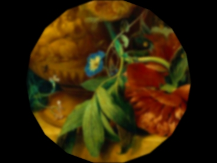
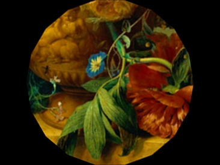
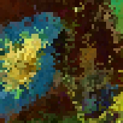
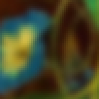
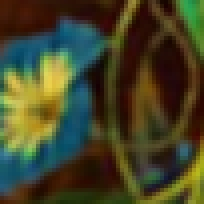
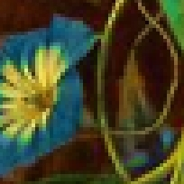
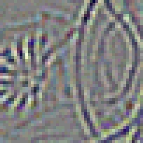

The ability to pipe invocations of ilx together
gives the ability to evaluate the quality of different kernels, by
repeated resampling. We want to do this on floating point data, so we
convert to floats first with unu convert, and then pipe
the same invocation of ilx many times, then unu quantize back to an
8-bit color image. This isn't terribly fast (since moss and
ilx were written in a weekend with functionality more
important that efficiency), but the results are interesting:
The ability to pipe invocations of ilx together
gives the ability to evaluate the quality of different kernels, by
repeated resampling. We want to do this on floating point data, so we
convert to floats first with unu convert, and then pipe
the same invocation of ilx many times, then unu quantize back to an
8-bit color image. This isn't terribly fast (since moss and
ilx were written in a weekend with functionality more
important that efficiency), but the results are interesting:
alias R "ilx @kernel.txt -t rotate:20 -0 u:0.5,0.5 -b pad"
alias 180deg "R | R | R | R | R | R | R | R | R "
echo "-k box" > kernel.txt
unu convert -i init.ppm -t float \
| 180deg | 180deg \
| unu quantize -b 8 -min 0 -max 255 -o box.ppm
cjpeg -quality 99 box.ppm > box.jpg
echo "-k tent" >! kernel.txt
unu convert -i init.ppm -t float \
| 180deg | 180deg \
| unu quantize -b 8 -min 0 -max 255 -o tent.ppm
cjpeg -quality 99 tent.ppm > tent.jpg

echo "-k cubic:0,0.5" >! kernel.txt
unu convert -i init.ppm -t float \
| 180deg | 180deg \
| unu quantize -b 8 -min 0 -max 255 -o catr.ppm
cjpeg -quality 99 catr.ppm > catr.jpg
echo "-k quartic:0.0834" >! kernel.txt
unu convert -i init.ppm -t float \
| 180deg | 180deg \
| unu quantize -b 8 -min 0 -max 255 -o qrtc.ppm
cjpeg -quality 99 qrtc.ppm > qrtc.jpg

And to compare them all:
unu crop -i box.ppm -min 0 151 81 -max M m+50 m+50 \
| unu resample -k box -s = x4 x4 \
| unu save -f pnm | cjpeg -quality 99 > box-zoom.jpg
unu crop -i tent.ppm -min 0 151 81 -max M m+50 m+50 \
| unu resample -k box -s = x4 x4 \
| unu save -f pnm | cjpeg -quality 99 > tent-zoom.jpg
unu crop -i catr.ppm -min 0 151 81 -max M m+50 m+50 \
| unu resample -k box -s = x4 x4 \
| unu save -f pnm | cjpeg -quality 99 > catr-zoom.jpg
unu crop -i qrtc.ppm -min 0 151 81 -max M m+50 m+50 \
| unu resample -k box -s = x4 x4 \
| unu save -f pnm | cjpeg -quality 99 > qrtc-zoom.jpg
unu crop -i init.ppm -min 0 151 81 -max M m+50 m+50 \
| unu resample -k box -s = x4 x4 \
| unu save -f pnm | cjpeg -quality 99 > init-zoom.jpg
| 
| 
|
| 
|
| nearest-neighbor
| bilinear
| Catmull-Rom
| quartic
|

original
The difference between Catmull-Rom and the quartic is tiny, but the
quartic is slightly better at preserving features:
unu 2op - catr.ppm qrtc.ppm -t float \
| unu crop -min 0 151 81 -max M m+50 m+50 \
| unu resample -k box -s = x4 x4 \
| unu quantize -b 8 | unu save -f pnm | cjpeg -quality 99 > cq-diff.jpg

The range of pixel value differences shown above is only -9 to 9.
All this really means is that I need to get my act together and
implement some much better filters, like windowed sinc.